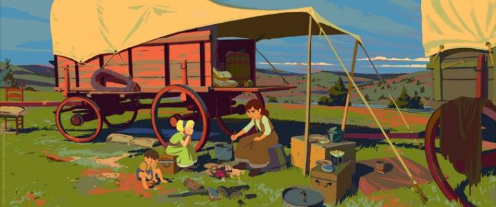

France seems to have a fascination with the myths and legends of the old American West, moreso than even America itself does. Whether it's in film or comics, there's plenty of adaptations depicting cowboys and outlaws like Jesse James, Buffalo Bill, and Calamity Jane. Director Remi Chaye had a critical success with the animated film "Long Way North," and it was natural for him to create a new story set in a gritty, harsh reality with another young, headstrong heroine. "Calamity - A Childhood of Martha Jane Cannary" was released in 2020, with many critics looking forward to it. ... as a side note, from the title and it's font, to the initial promotional art and posters, I assumed the movie was loosely based on the graphic novel "Calamity Jane - The Calamitous Life of Martha Jane Cannary" by Christian Perrissin and Matthieu Blanchin, originally published in 2008 and re-released in English for the first time in 2017. Perhaps this movie, focusing on just young Martha's childhood, was a prequel / spinoff? There's absolutely no creditation to it from the movie though, and when I even asked about it in as a comment in an online article, the comment was deleted as spam. Actually reading the book would make it clear that the two projects are different, but I'm still surprised there's been absolutely no comparison between the two online at the time of this writing. Anyway, the movie "Calamity" focuses on what seems to be just a couple weeks (although the characters reveal the entirety to be at least several months-worth of time) in Martha's life as a child. Her single father and younger siblings are part of a caravan of pioneers, making their away across the continent to Oregon, where they hope to create a new town and home for themselves. Already traveling for many months, with many months yet to go, the many dozen travelers know they need to stick together, but tensions are high and patience is thin. Martha and another young boy frequently bully and fight each other, and the caravan's leader quietly sees Martha's family as a burden, despite their promising Martha's deceased mother that they would take them along. It doesn't help that Martha is independent, wanting to drive the wagon, ride horses, and even wear pants! All of which was fiercely frowned upon at the time for women; these jobs and this appearance was for men only. Martha earns her nickname in the movie, a step towards becoming a liberating representation for women and the rugged adult she became known to be.Much like "Long Way North," "Calamity" might shock viewers at how grounded and realistic the movie feels. It goes the extra mile to portray little details, like how they collect and filter water and collect food. Things go wrong during the travel. No one is shown to have died in the movie, and it's still very much family-friendly, but this ain't Disney's Wild West. This is why I like director Chaye; he respects children and the time-period enough to show reality, while not getting too deep with unnecessary details just for the sake if it or for shock value.  But again, the movie FEELS like it takes place over the course of just a couple weeks, and feels like a very small part of Martha's life, even if a couple of her legends (like facing down a bear, among other things) take place here. About halfway through, a theft from the caravan (and Martha herself already being disliked) forces her to leave in search of the stolen belongings, in hope of returning them. It results in a satisfying ending to this specific chapter, but it also feels like only one chapter. "Was that it?!" I thought. It was a wise decision on paper, but the movie could have benefited from a longer narrative. Visually, "Calamity" uses a digital production to attempt looking like a digital painting, but looks more like a pastel drawing. Regardless, there are some stunning shots of the frontier, despite how barren it is, with colors that really pop. Characters are rendered simply, but thoughtfully to give them 3D depth. There are a couple cool animation sequences in terms of motion. But the production at large is kept simple and constraied, and even appears to use 3D animation as a guide to some of the moving characters (it's subtle enough to not be noticed... and if I'm mistaken and everything was hand-drawn with no 3D references, then it's an impressive result). Production videos suggest that the team though much higher of the results than they actually come across: the movie looks good, but not notably so.The French dub (I saw this online in 2021 from an American festival) is good, and the script has fun with some of the American slang and insults thrown around, but it would be great to watch again with an English dub to convey the American West more authentically. The musical score is modest but haunting, not unlike the "Red Dead Redemption" video games, matching well with the harsh setting wear cold, heat, starvation or pure hard work can kill a man.Not surprisingly from the studio and director, "Calamity - A Childhood of Martha Jane Cannary" has a smart and respectful script that should impress both children and adults. It doesn't quite have the production value appeal yet of something fro Disney, Ghibli, or Cartoon Saloon, but I would still recommend the film, and probably whatever director Remi Chaye makes next.
- "Ani" More reviews can be found at : https://2danicritic.github.io/ Previous review: review_C_-_Control_-_Money_of_Soul_and_Possibility Next review: review_Canaan